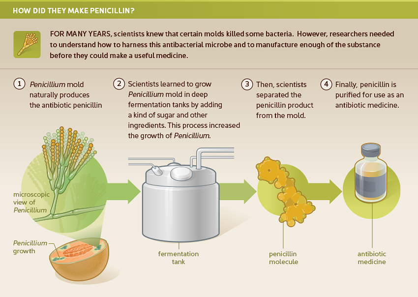

What will I learn?
Objective
Penicillin completely revolutionized the treatment of infectious diseases and saved millions of lives. But what is the story behind the discovery of penicillin? And who was Dr. Alexander Fleming, the man responsible for this discovery? Let’s find out more about both the discovery and the discoverer.

.
Licensed under the Creative Commons Attribution Share Alike License 4.0